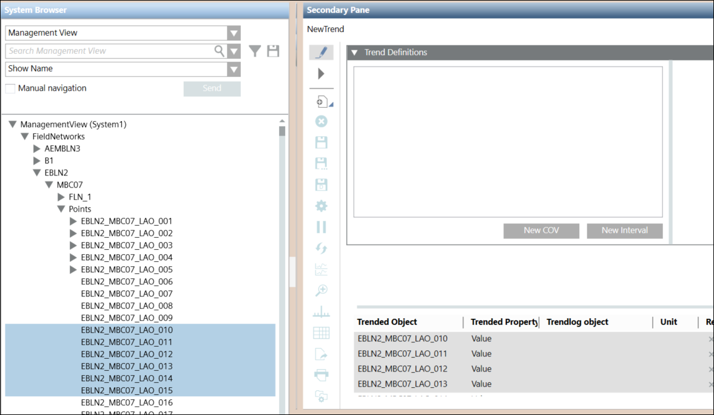
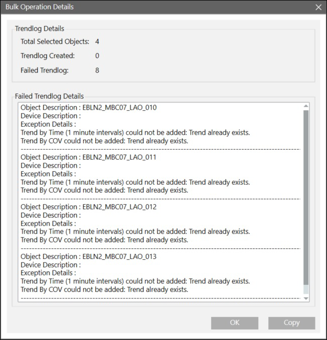

APOGEE Trend Editor Overview
The APOGEE Trend Editor is a Desigo CC application that allows you to create, view, and modify existing APOGEE trend definitions for your Insight data points. The APOGEE Trend Editor displays when the System Manager is in Engineering mode and an APOGEE data point or APOGEE trend definition is the primary selection.
You can monitor and report your APOGEE trend data in the Desigo CC Trend application. For more information, see Trends in the Operating Mode book.
APOGEE Data Points and TEC Subpoints
Each APOGEE data point is represented as one object in the System Browser, and can be monitored and controlled individually. While TECs are also represented as individual objects, their subpoints are properties of the object and cannot be individually trended—the TEC itself is trended.

NOTE:
For information about points and the Cross Trunk feature, see APOGEE Cross Trunk Overview.
Trend Methods
Trend definitions allow you to collect information about how your building control equipment is operating over a specified time period. With the APOGEE Trend Editor, you define trend definitions that provide a historical record of both analog and digital point activity.
The APOGEE Trend Editor is designed with two basic methods for trending: Interval and Change-of-Value (COV). Both methods can be used for analog or digital data points. The APOGEE Trend Editor allows you to define one COV trend and up to four interval trends.
Before you create a trend definition, decide how you want to trend a point. The APOGEE Trend Editor is designed with two basic methods for trending: Interval and Change-of-Value (COV). Both methods can be used for analog or digital data points.
Method | Description | Comments |
Interval | Uses a specific interval of time (15 minutes or one hour) to record values for the data point when the interval is reached. | Minimum interval sample is one minute; often used in performance based trending because it captures every value change for the data point. |
COV | Uses a change in the value or state of a data point when that data point changes by at least one pre-defined COV limit | Specify the number of samples you want to collect from the field panel because data points change values at different rates; COV logs a change for point failure and return from failure. |
Examples of Frequently Trended Points
- temperatures for boilers and chillers
- outside air temperature sensors
- outside humidity sensors
- discharge air temperature sensors
- room pressures
- lights
Bulk Trend Editor
The Bulk Trend Editor feature allows you to create APOGEE trend definitions in bulk, by selecting and configuring a trend definition for multiple points.

Once you have created the Trend and run the definition creation, the Bulk Operation Details dialog displays.

Trend COV Limit
A COV limit is a value that represents a change to a measured analog reading of LAI, LAO, and LPACI data points. The Trend COV Limit specifies the amount of change an analog point can encounter before the field panel collects and reports the change.
Point COV Limit
The Point COV Limit specifies the default amount of change an analog data point can encounter before the Desigo CC Trend application reports the change.
Special Trend COV Limit
The Special Trend COV Limit allows you to override the Point COV Limit, by entering another value that represents a change to a measured analog data point reading (LAI, LAO, and LPACI data points only.) For example, if an LAI data point COV Limit is 1.0 degrees, too many samples might be generated in the collected trend data. You can override the limit for the data point by setting the Special Trend COV Limit to 3.0 degrees.
Fewer, more accurate samples of only the most significant point value changes are ideal.